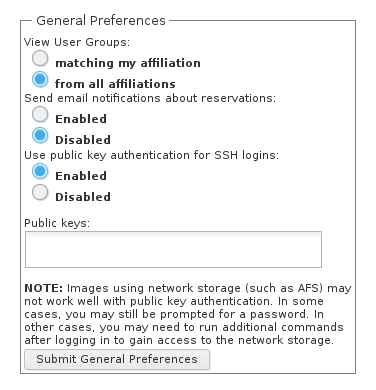

VCL provides the ability for end users to authenticate to Linux environments using SSH identity keys. The user must first create an SSH key pair (private and public) before proceeding with the steps below. Search online for a tutorial on creating and using SSH key pairs, here are a few.
ssh-keygen nstructions from Oracle
Once SSH key pairs are created, perform the following steps to enable this feature for your VCL account.
Paste the contents of your public key file in the Public keys box

On your next VCL reservation, your public key will be inserted onto the assigned machine.
NOTE: This change will not be applied to existing reservations.
To test this change, make a new reservation. When connecting to your reservation, specify the private key that matches the public key you used in the previous steps when you attempt to make an SSH connection with the VCL image.
If you are using a Linux or Mac machine to connect with the VCL image you can use the following SSH syntax in a terminal window.
ssh -i <path_to_private_ssh_key> <username>@<ipaddress>
Replace
If you are using a local Windows machine, you’ll probably be using Putty for your SSH connection. Make sure you specify the “private key file for authentication” in the “Options controlling SSH authentication” section of Putty. You can find this section by navigating through the options on the left side of Putty…
Connection » SSH » Auth
WARNING: The ssh identity key will not work for images where your home directory resides on a network file system that cannot be accessed until you authenticate to the remote computer, such as OpenAFS.